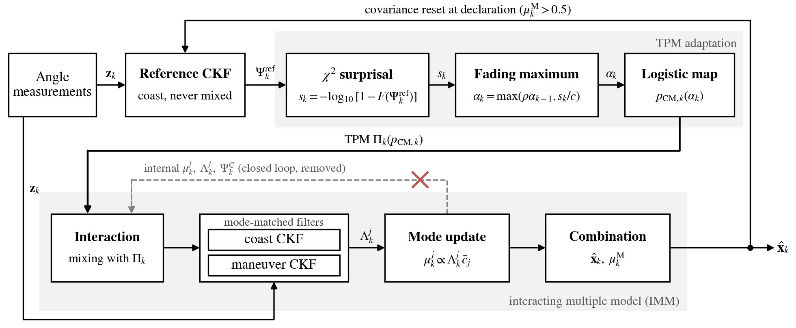
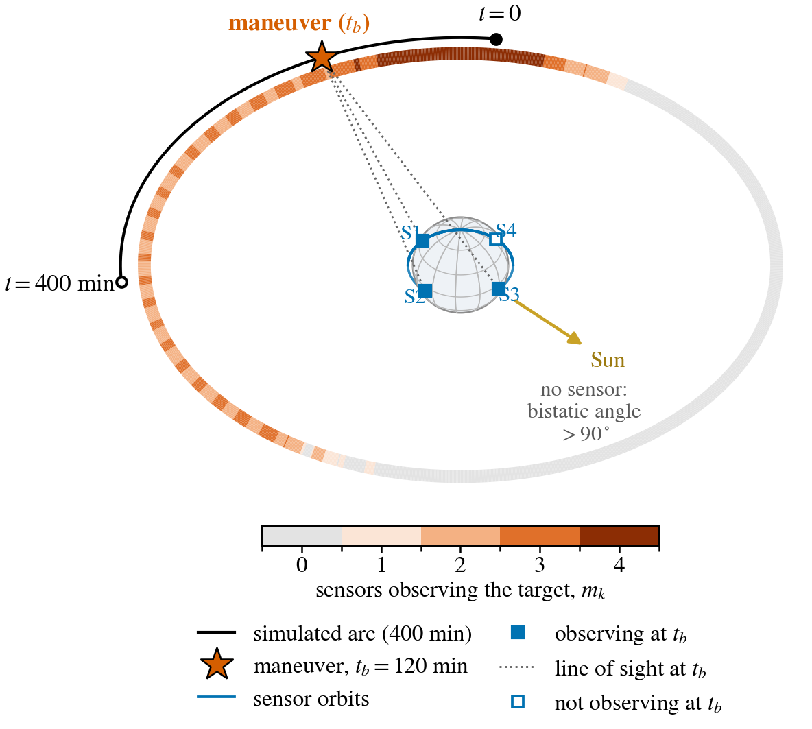

1School of Electrical Engineering, 2Department of Aerospace Engineering, 3Cho Chun Shik Graduate School of Mobility, KAIST
Replay of the Monte Carlo runs behind Table 1 of the paper. Pick a maneuver, step through the runs or view all of them at once, and drag the time slider to follow the surprisal of the reference filter, the transition probability it sets, the maneuver probability and the position error of each filter.
Detecting maneuvers of non-cooperative satellites is essential for space situational awareness. The interacting multiple model (IMM) filter has been applied to detect unannounced maneuvers, but the standard IMM assumes a fixed Markov transition probability matrix (TPM) that must be tuned without knowledge of the maneuver rate of the target. To avoid the tuning, adaptive-TPM approaches update the TPM online from statistics computed inside the IMM. However, the statistics already depend on the TPM through the interaction step, and the dependence forms a feedback loop. The loop itself can raise the maneuver probability in the absence of a maneuver or suppress its rise when a maneuver occurs. In this paper, the TPM is driven by the normalized innovation squared (NIS) of a reference coast filter that is decoupled from the IMM, and the NIS is mapped continuously to the coast-to-maneuver transition probability. The reference-driven IMM (RD-IMM) is evaluated with four space-based optical sensors tracking a geostationary target. In the simulation, the reference filter keeps its sensitivity after small maneuvers, whereas the NIS of the coast sub-filter of the IMM is reduced by the interaction step. RD-IMM detects 1–3 m/s maneuvers, which the fixed-TPM IMM rarely detects, with a false-declaration rate below the false-alarm probability of 0.05 set for the reference filter. In the first hour after the 1–3 m/s maneuvers, RD-IMM also has a lower position error than the compared filters.


Detection and tracking results as printed in Table 1 of the paper (50 Monte Carlo runs per case, 500 maneuver-free runs for the false-declaration rate). Pd / median latency [min]. The highlighted column is the case selected in the demo.
–: no detected run. Post-maneuver RMSE is over the first 60 min after an in-track 1 m/s impulse. CI-IMM declares a maneuver when the NIS exceeds Ψmax = 30, and the other filters when the maneuver probability exceeds 0.5.
@article{han2026rdimm,
title = {Reference-Filter-Driven Transition Probabilities for IMM-Based Satellite Maneuver Detection},
author = {Han, Euiseok and Choi, Sangheon and Kong, Seung-Hyun},
journal = {arXiv preprint arXiv:2610.11242},
year = {2026}
}